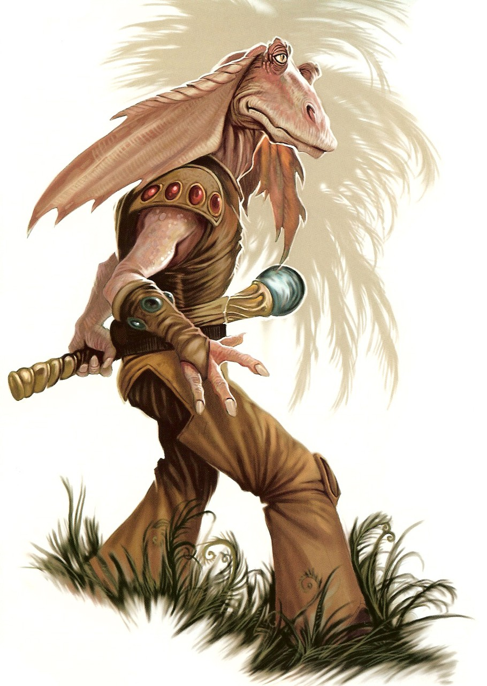

Gungan
Special Abilities: Gungans begin the game with one rank in Athletics. They still may not train Athletics above rank 2 during character creation.
Amphibious: Gungans may breathe underwater without penalty and never suffer movement penalties for traveling through water.
Few Gungans travel away from their homeworld of Naboo. Instead, most prefer to live in cooperation with their planet’s natural ecosystems. In fact, Gungan galactic travelers are often exiles. Gungan law is unforgiving, and expulsion is a common form of punishment. Consequently, Gungans found offworld are seldom characteristic of the species.
Gungans are a bipedal, amphibious species. They are tall and thin, averaging nearly two meters in height. Their expressive, long ears and eyestalks are set around a bill-like mouth. They are omnivorous, with a diet composed largely of mollusks and aquatic plants. Gungan compound lungs are capable of efficiently extracting oxygen from both air and water. Gungan infants are born as tadpoles within water cradles. Their limbs develop within a month of birth.
The various Gungan cities are largely stratified according to residents’ membership in particular clans. Interrelations between cities have been established through carefully worded treaties. A High Council serves as an overall governing body that exists largely to resolve disputes between the different cities.
Gungan society places a very high value on peace and order. While they are a generally happy people, they have little tolerance for elements that disrupt their lives. Even minor crimes are treated severely; Vandalism, for example, merits corporal punishment or even exile.
Gungans are proud of their independence and are willing to go to great lengths to defend it. Each city maintains its own militia armed with energy shields and plasmic energy balls. Gungans make extensive use of animal mounts, and their natural tools remain effective in combination with their shield technologies. The various militias train together regularly and can assemble into a planetary Grand Army to face broader threats.
Gungans are native to the planet Naboo near the Outer Rim Territories, though they share habitation with humans on that world. The planet’s climate is primarily temperate. Substantial oceans separate its heavily forested landmasses. Almost all Gungan habitats are largely underwater, while cities dominated by humans are located upon dry land. The two species have a long history of interacting peacefully with one another. The Gungan High Council links Gungan and human societies together to form a planetary government. Members of both species contribute to the democratic process, particularly for interaction with offworld entities. Currently, this government is under the oversight of the Empire.
Naboo’s oceans have a broad range of predators, including the sando aqua monster and the opee, both large enough to swallow a bongo sub in a single bite. Areas immediately surrounding their cities are largely secure, but extended journeys can incorporate a high degree of risk.
All Gungans speak their native Gungan as well as Basic.
Gungans do not have a native Force tradition or a strong tradition of membership in the Jedi Order. However, their cultural tendencies to live in connection with the natural world are consistent with an understanding of the Living Force. Gungan underwater cities are relatively isolated, even from Naboo’s human population. It is likely that Jedi simply failed to discover the majority of Gungan Force sensitives who might have joined the order